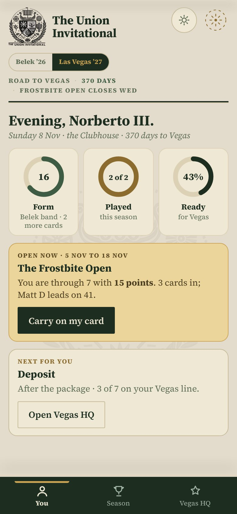
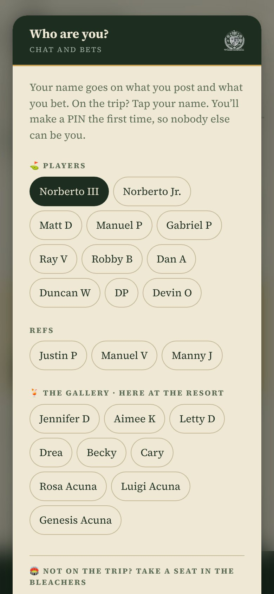
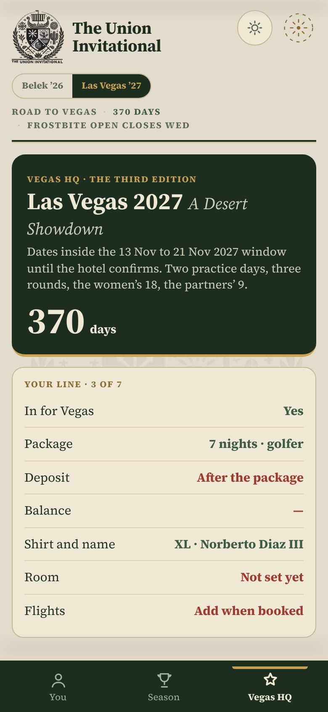
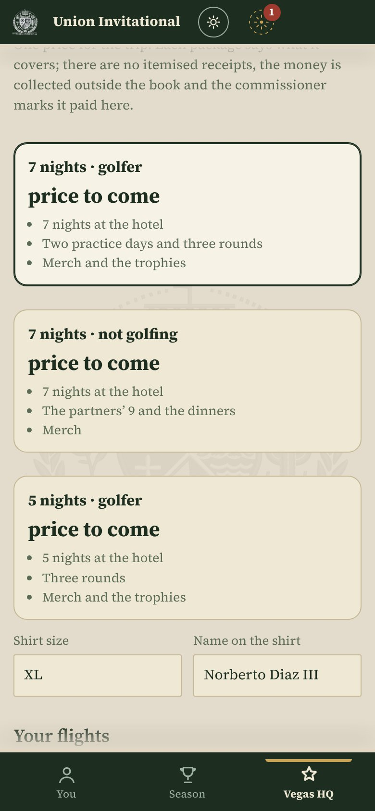
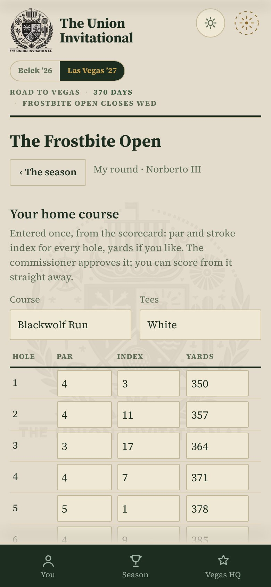
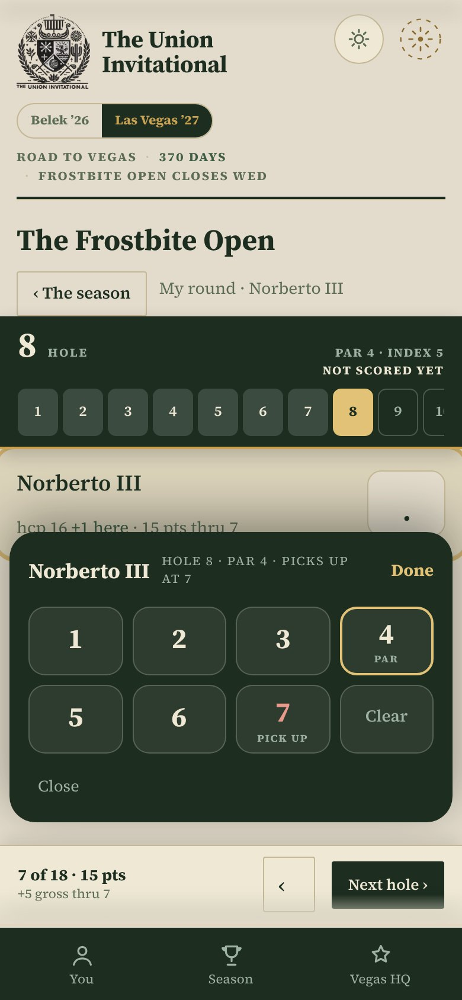
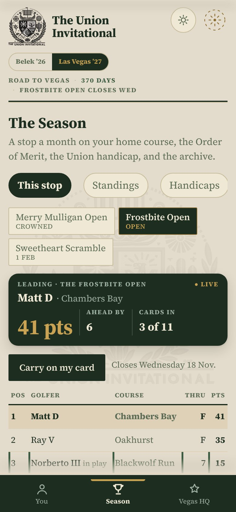
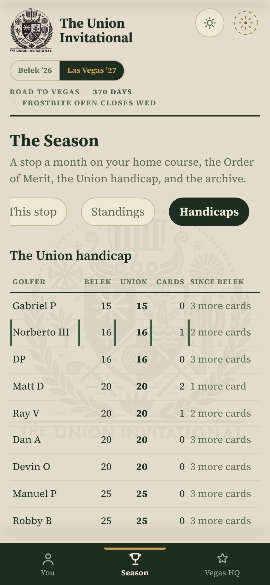
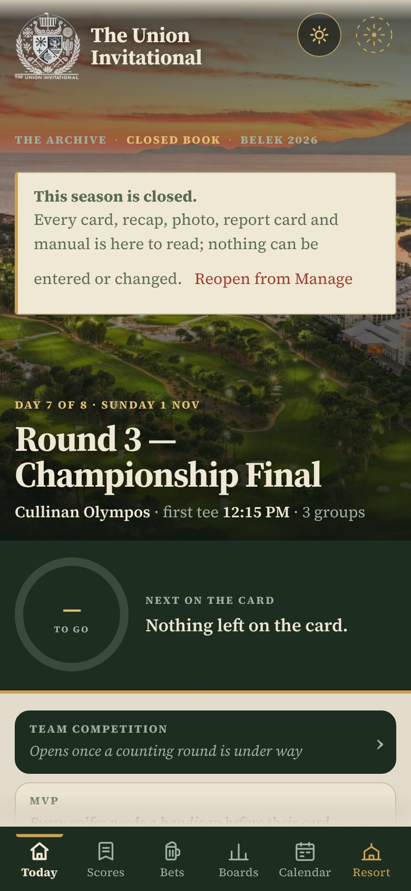

1Las Vegas, November 2027
A Desert Showdown. The week sits inside 13 to 21 November 2027; the exact dates lock when the hotel confirms.
What we know so far
- The format you know: two practice days and three rounds, with the team competition, MVP, the cup and Bingo Bango Bongo.
- Two new events: a women’s 18-hole division, and a 9-hole game for partners who want a go.
- One price for the trip. Each package covers the hotel, the golf, the merch and the trophies. No itemised receipts; one number, and a bucket of what it includes. 7-night and 5-night, golfing and not golfing.
- Pricing and the hotel to come. Quotes are in hand. When they land, the price appears on your package in the app and the deposit date with it.
2What changed in the app
Same icon on your phone, same book. Open it and it looks like this.
Three tabs instead of six
- You: your form, your card to enter, what’s next on your Vegas line.
- Season: the stop that’s open, the standings, the handicaps, the awards, the archive.
- Vegas HQ: in or out, your package, what’s paid, your flights, the rooms.
- When the Vegas week comes, the six tabs from Türkiye come back exactly as they were. Nothing to relearn.
The switch under the crest reads Belek ’26 · Las Vegas ’27. Tap Belek to read the whole Türkiye book: every card, board, recap, photo and report card. It can’t be changed any more, by anyone.

3Your name, once
The first time you open it, the book asks who you are. Tap your name. If you did this in Türkiye for the chat and the bets, you’re already done: it’s the same name and the same PIN.
- Your name is what your cards, your sign-up and your flights are filed under.
- Partners and family: you’re on the list too, under the gallery. Tap yours; you need it for Vegas HQ.
- New phone? Tap your name and type the PIN you made. Forgotten it? The commissioner can clear it so you can choose again.

4Vegas HQ: say you’re in
Your line
Seven things make up your line for Vegas, and the tab shows which are done. Today it’s the first two.
- Tap I’m in, Maybe or Not this one.
- Pick your package. The price shows price to come until the hotel confirms, then the number appears.
- Put your shirt size in, and the name you want on it.
- Flights: add them when they’re booked. The commissioner uses them for the airport runs.

Money, in the open
Money is collected the way it always has been, outside the app. The commissioner marks what’s come in, and everyone sees a meter: how much is paid and how much is left, per person. No secrets, no chasing.
- Deposits by 31 March 2027, the balance by 3 August 2027, unless the hotel says otherwise.
- Rooms appear on the same tab once the commissioner has set them.

5Play a stop: a round at home, scored in the app
A stop a month, each with a window of a few weeks. Play eighteen holes on your own course inside the window and enter your card as you go, hole by hole, on the same keypad the refs used in Belek.
Your home course, once
The first time, the book asks for your course: par and stroke index for each hole off the scorecard, yards if you like. Save it and you can score straight away; the commissioner approves it behind the scenes. Playing somewhere else? Tap Change course.

Hole by hole
- From You or Season, tap Enter my card.
- Tap the tile, tap your score. The pad moves to the next hole itself. Par is ringed; pick up at the red number.
- Points are worked out as you go, net Stableford off your Union handicap, with your strokes shown on each hole.
- Put the phone away mid-round and come back: the card is where you left it.

Before it counts: a photo of the signed card
- After the 18th, the book asks for a photo of your signed scorecard, taken there and then. Then tap Post my card.
- No photo, no card. Honour system, with a receipt.
- Posted cards can’t be edited. If something’s wrong, tell the commissioner.
6The season: leaderboards, a winner every time, a handicap that moves
This stop
The leader on the plate, live, and every card under it. At midnight on the last day of the window the stop is crowned, and it pays into the Order of Merit: 100 for the win, 60, 40, 30 and down the places.
The stops so far
- The Merry Mulligan Open · December
- The Frostbite Open · January
- The Sweetheart Scramble · February
- More follow, a month at a time, each announced in the app.

The Union handicap
You start on your Belek band. Every card you post leaves a mark; once three are in, your handicap becomes the best three of your last six, at 96%, and it keeps moving all year. The handicaps lock a month before Vegas and become the bands for the week.
So the more you play, the truer your number. A sandbagger’s season is a short one.

7Belek 2026 is in the archive
Tap Belek ’26 under the crest and the Türkiye book comes up exactly as it ended: Today, Scores, Bets, Boards, Calendar, the Resort. Every card, every board, the three recaps, the photos, the bets, the chat, the players report and your practice manual.
- Everything is there to read. Nothing can be entered or changed, by anyone.
- Your report card and your practice manual are also one tap from the You tab.
- Tap Las Vegas ’27 to come back.

8Questions
Do I have to play every stop?
No. Play the ones you can. The Order of Merit rewards turning up, and the handicap needs three cards to start moving, but nothing is compulsory.
What if my course doesn’t have stroke indexes?
Every scorecard has them, usually marked S.I., HCP or Index. If yours really doesn’t, number the holes hardest to easiest yourself; the commissioner will look it over.
Nine holes only?
Not for a stop; eighteen in the window, in one go or two. The partners’ 9 is a Vegas event.
I’m not a golfer. What do I do?
Vegas HQ is for you: say you’re in, pick a not-golfing package, add your shirt and flights. The season tabs are there to follow and heckle.
Can I still bet or chat about Belek?
No. The Türkiye book is closed and reads as history. The Vegas week will have its own chat and bets when it opens.
Something looks wrong with my card or my money
Message the commissioner. Posted cards and payments are only changed by him, and the change shows for everyone.
The book: ndiaziii93-jpg.github.io/Union-Invitational- · open it from the icon on your Home Screen.